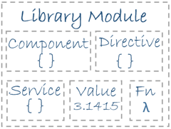

class: center, middle # Angular  # Cross Platform Framework For web, mobile web, native mobile and native desktop. --- layout: true --- # Agenda 1. Architecture 2. Routing 3. Forms 4. ... --- # 1.Architecture + Modules - Components * Templates - Services and dependency injection --- # 1-1.Modules Angular apps are modular and Angular has its own modularity system called <b>NgModules</b>. Modules are a great way to organize an application and extend it with capabilities from external libraries. They can import functionality that is exported from other NgModules, and export selected functionality for use by other NgModules. Every Angular app has at least one module, the root module. You bootstrap that module to launch the application. Angular loads as a collection of JavaScript modules. You can think of them as library modules.  --- # 1-1-1.NgModules An NgModule is a class marked by the @NgModule decorator. NgModules are containers for a cohesive block of code dedicated to an application domain, a workflow, or a closely related set of capabilities. Every Angular app has at least one NgModule class, the root module, which is conventionally named AppModule and resides in a file named app.module.ts. Each Angular library name begins with the @angular prefix. Install them with the node package manager npm and import parts of them with JavaScript import statements. ```javascript import { NgModule } from '@angular/core'; import { BrowserModule } from '@angular/platform-browser'; @NgModule({ imports: [ BrowserModule ], providers: [ Logger ], declarations: [ AppComponent ], exports: [ AppComponent ], bootstrap: [ AppComponent ] }) export class AppModule { } ``` Angular libraries are NgModules, such as FormsModule, HttpClientModule, and RouterModule. --- # 1-2.Components Components are the fundamental building blocks of Angular applications. They display data on the screen, listen for user input, and take action based on that input. A component controls a patch of screen called a view. In reality it's just a class like this one: ```javascript @Component({ selector: 'app-root', templateUrl: './app.component.html', styleUrls: ['./app.component.css'] }) export class AppComponent { title = 'My First Angular App!'; } ``` --- # 1-2.Components In application files tree component are divided on 4 files.  1. name.component.css - css sheet file 2. name.component.html - html template file 3. name.component.spec.ts - application test file 4. name.component.js - file with main class for component --- # 1-2-1.Component Template Template is HTML code with binded component properties, methods, events, angular directives and pipes. Propeties are enclosed in double curly braces: {{propertyName}}. You can put code in component property call <i>template</i> or in seperate file and link to it in the component metadata using the <i>templateUrl</i> property. In property: ```javascript @Component({ selector: 'app-root', template: `<h1>{{title}}</h1> <h2>My favorite hero is: {{myHero}}</h2>` }) ``` In file: ```javascript <h2>My Heroes</h2> <ul class="heroes"> <li *ngFor="let hero of heroes" (click)="onSelect(hero)" [class.selected]="hero === selectedHero"> <span class="badge">{{hero.id}}</span> {{hero.name}} </li> </ul> ``` --- # 1-2-2.Pipes Pipes are a good way to format strings, currency amounts, dates and other display data. Angular ships with several built-in pipes and you can create your own. ```javascript <h2>{{hero.name | uppercase}} Details</h2> ``` The word uppercase in the interpolation binding, right after the pipe operator ( | ), activates the built-in UppercasePipe. --- # 1-3.Services A service is typically a class with a narrow, well-defined purpose. It should do something specific. Angular distinguishes components from services to increase modularity and reusability. By separating a component's view-related functionality from other kinds of processing, you can make your component classes lean and efficient. A component can delegate certain tasks to services, such as fetching data from the server, validating user input, or logging directly to the console. By defining such processing tasks in an injectable service class, you make those tasks available to any component. You can also make your app more adaptable by injecting different providers of the same kind of service, as appropriate in different circumstances. Here's an example of a service class that logs to the browser console: ```javascript export class Logger { log(msg: any) { console.log(msg); } error(msg: any) { console.error(msg); } warn(msg: any) { console.warn(msg); } } ``` --- #1-3-1.Dependency injection --- #1-4.Bootstrapping If you use the Angular CLI to generate an app, the default AppModule is as follows: ```javascript /* JavaScript imports */ import { BrowserModule } from '@angular/platform-browser'; import { NgModule } from '@angular/core'; import { FormsModule } from '@angular/forms'; import { HttpClientModule } from '@angular/common/http'; import { AppComponent } from './app.component'; /* the AppModule class with the @NgModule decorator */ @NgModule({ declarations: [ AppComponent ], imports: [ BrowserModule, FormsModule, HttpClientModule ], providers: [], bootstrap: [AppComponent] }) export class AppModule { } ``` --- #1-4.Bootstrapping The @NgModule decorator identifies AppModule as an NgModule class. @NgModule takes a metadata object that tells Angular how to compile and launch the application. declarations—this application's lone component. imports—import BrowserModule to have browser specific services such as DOM rendering, sanitization, and location. providers—the service providers. bootstrap—the root component that Angular creates and inserts into the index.html host web page. The default application created by the Angular CLI only has one component, AppComponent, so it is in both the declarations and the bootstrap arrays. <i>Press "P" for note</i> ??? ```javascript /* JavaScript imports */ import { BrowserModule } from '@angular/platform-browser'; import { NgModule } from '@angular/core'; import { FormsModule } from '@angular/forms'; import { HttpClientModule } from '@angular/common/http'; import { AppComponent } from './app.component'; /* the AppModule class with the @NgModule decorator */ @NgModule({ declarations: [ AppComponent ], imports: [ BrowserModule, FormsModule, HttpClientModule ], providers: [], bootstrap: [AppComponent] }) export class AppModule { } ``` --- #1-4.Bootstrapping <b>The declarations array</b> The module's declarations array tells Angular which components belong to that module. As you create more components, add them to declarations. You must declare every component in exactly one NgModule class. If you use a component without declaring it, Angular returns an error message. <b>The imports array</b> The module's imports array appears exclusively in the @NgModule metadata object. It tells Angular about other NgModules that this particular module needs to function properly. This list of modules are those that export components, directives, or pipes that the component templates in this module reference. In this case, the component is AppComponent, which references components, directives, or pipes in BrowserModule, FormsModule, or HttpClientModule. A component template can reference another component, directive, or pipe when the referenced class is declared in this module or the class was imported from another module. <i>Press "P" for note</i> ??? ```javascript /* JavaScript imports */ import { BrowserModule } from '@angular/platform-browser'; import { NgModule } from '@angular/core'; import { FormsModule } from '@angular/forms'; import { HttpClientModule } from '@angular/common/http'; import { AppComponent } from './app.component'; /* the AppModule class with the @NgModule decorator */ @NgModule({ declarations: [ AppComponent ], imports: [ BrowserModule, FormsModule, HttpClientModule ], providers: [], bootstrap: [AppComponent] }) export class AppModule { } ``` --- #1-4.Bootstrapping <b>The providers array</b> The providers array is where you list the services the app needs. When you list services here, they are available app-wide. You can scope them when using feature modules and lazy loading. <b>The bootstrap array</b> The application launches by bootstrapping the root AppModule, which is also referred to as an entryComponent. Among other things, the bootstrapping process creates the component(s) listed in the bootstrap array and inserts each one into the browser DOM. Each bootstrapped component is the base of its own tree of components. Inserting a bootstrapped component usually triggers a cascade of component creations that fill out that tree. While you can put more than one component tree on a host web page, most applications have only one component tree and bootstrap a single root component. <i>Press "P" for note</i> ??? ```javascript /* JavaScript imports */ import { BrowserModule } from '@angular/platform-browser'; import { NgModule } from '@angular/core'; import { FormsModule } from '@angular/forms'; import { HttpClientModule } from '@angular/common/http'; import { AppComponent } from './app.component'; /* the AppModule class with the @NgModule decorator */ @NgModule({ declarations: [ AppComponent ], imports: [ BrowserModule, FormsModule, HttpClientModule ], providers: [], bootstrap: [AppComponent] }) export class AppModule { } ``` --- # 2.Routing Router is one of the Angular modules. Routes tell the router which view to display when a user clicks a link or pastes a URL into the browser address bar. A typical Angular Route has two properties: 1.path: a string that matches the URL in the browser address bar. 2.component: the component that the router should create when navigating to this route. ```javascript import { HeroesComponent } from './heroes/heroes.component'; const routes: Routes = [ { path: 'heroes', component: HeroesComponent } ]; ``` --- # 3.Forms